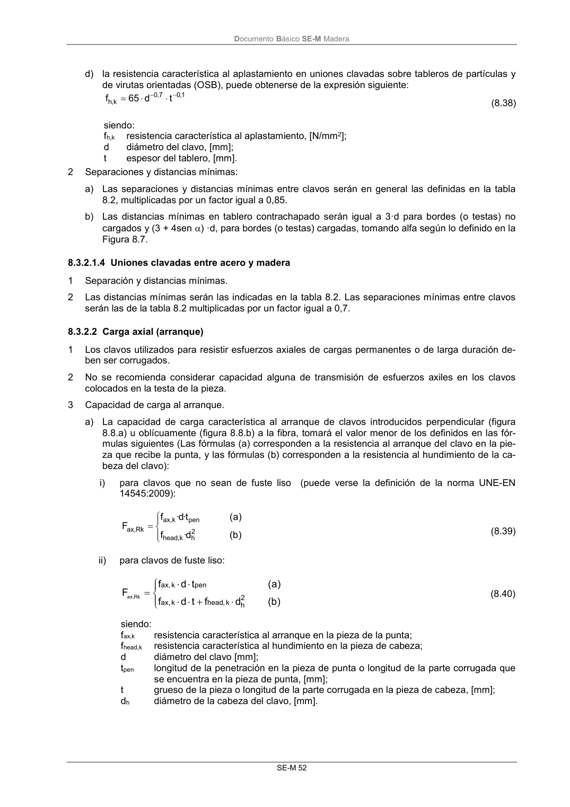

DB-SE-M · 8.3.2.1.4 Uniones clavadas entre acero y madera · 8.3.2.2 Carga axial (arranque) · versión 2019-12-20
SHA256: 26b5819839ebfda78b0b119c5e76a0a37773b0d763c05688541870075df93718 · página física 58 de 132 · métodos de encabezado
solo si están cotejados.
Formatos: Markdown · JSON de bloques · PDF p. 58 · imagen PNG
Documento Básico SE-M Madera SE-M 52 d) la resistencia característica al aplastamiento en uniones clavadas sobre tableros de partículas y de virutas orientadas (OSB), puede obtenerse de la expresión siguiente: 1,0 7 , 0 k,h t d 65 f (8.38) siendo: fh,k resistencia característica al aplastamiento, [N/mm2]; d diámetro del clavo, [mm]; t espesor del tablero, [mm]. 2 Separaciones y distancias mínimas: a) Las separaciones y distancias mínimas entre clavos serán en general las definidas en la tabla 8.2, multiplicadas por un factor igual a 0,85. b) Las distancias mínimas en tablero contrachapado serán igual a 3·d para bordes (o testas) no cargados y (3 + 4sen ) ·d, para bordes (o testas) cargadas, tomando alfa según lo definido en la Figura 8.7. 8.3.2.1.4 Uniones clavadas entre acero y madera 1 Separación y distancias mínimas. 2 Las distancias mínimas serán las indicadas en la tabla 8.2. Las separaciones mínimas entre clavos serán las de la tabla 8.2 multiplicadas por un factor igual a 0,7. 8.3.2.2 Carga axial (arranque) 1 Los clavos utilizados para resistir esfuerzos axiales de cargas permanentes o de larga duración de- ben ser corrugados. 2 No se recomienda considerar capacidad alguna de transmisión de esfuerzos axiles en los clavos colocados en la testa de la pieza. 3 Capacidad de carga al arranque. a) La capacidad de carga característica al arranque de clavos introducidos perpendicular (figura 8.8.a) u oblícuamente (figura 8.8.b) a la fibra, tomará el valor menor de los definidos en las fór- mulas siguientes (Las fórmulas (a) corresponden a la resistencia al arranque del clavo en la pie- za que recibe la punta, y las fórmulas (b) corresponden a la resistencia al hundimiento de la ca- beza del clavo): i) para clavos que no sean de fuste liso (puede verse la definición de la norma UNE-EN 14545:2009): ) b ( d· f ) a ( t· d· f F 2 h k, head pen k, ax Rk , ax (8.39) ii) para clavos de fuste liso: ) b ( d f t d f ) a ( t d f F 2 h k , head k , ax pen k , ax Rk , ax (8.40) siendo: fax,k resistencia característica al arranque en la pieza de la punta; fhead,k resistencia característica al hundimiento en la pieza de cabeza; d diámetro del clavo [mm]; tpen longitud de la penetración en la pieza de punta o longitud de la parte corrugada que se encuentra en la pieza de punta, [mm]; t grueso de la pieza o longitud de la parte corrugada en la pieza de cabeza, [mm]; dh diámetro de la cabeza del clavo, [mm].
